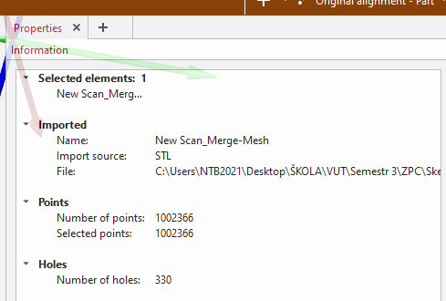
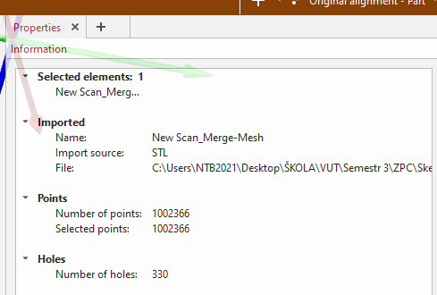
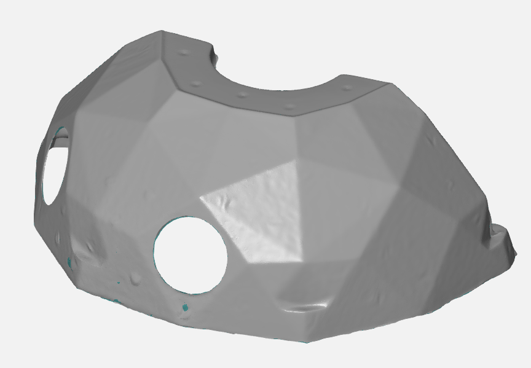

🔬 Úkol 4: 3D Skenování a Metrologická Analýza
Cílem tohoto projektu bylo kompletní zvládnutí procesu 3D skenování: od přípravy dílu, přes samotnou akvizici dat, až po finální zpracování sítě a metrologickou analýzu v profesionálním softwaru.
Jako skenovací objekt byl zvolen komplexní, geometricky složitý díl – pravděpodobně kryt pro větší strojní součást, obsahující řadu otvorů a hlubokých záhybů.
Fáze 1: Příprava objektu
Výchozí díl byl pro technologii optického skenování extrémně náročný, a to hned ze dvou důvodů: byl průhledný a zároveň vysoce lesklý.
Prvním nezbytným krokem byla proto povrchová úprava nanesením tenké vrstvy křídového spreje, který povrch zmatnil a zneprůhlednil. Následně bylo na díl strategicky rozmístěno přes 40 referenčních bodů. Klíčové bylo jejich zahuštění v místech se složitou geometrií (vnitřní záhyby a hrany), aby skener ani na moment neztratil sledování polohy.
Fáze 2: Akvizice dat
Pro samotné skenování byl použit skener SimScan a software DefinSight. S ohledem na složitost dílu bylo nastaveno rozlišení 0.5 mm.
Proces byl časově náročný a vyžadoval skenování z několika úhlů a obou stran, přičemž celkový expoziční čas dosáhl 10 minut. I přes pečlivý sběr dat zůstaly v hůře dostupných záhybech drobné nedoskenované oblasti.
Fáze 3: Zpracování sítě
Následoval post-processing, který byl klíčovou a nejnáročnější částí úkolu. Surová data, importovaná do softwaru GOM Inspect, tvořila síť (mesh) o více než 1 000 000 bodech a obsahovala 330 děr.
Zpracování probíhalo v několika krocích. Nejprve bylo nutné ručně odstranit artefakty a díry, které v síti zanechaly odstraněné referenční body. Následně byly zbývající menší díry, vzniklé při skenování, zaceleny pomocí automatických funkcí pro opravu sítě. Protože surová síť byla geometricky velmi nerovná ("hrubá"), byla aplikována funkce pro vyhlazení, která povrch urovnala do realističtější a čistší podoby. Nakonec byl pro snížení výpočetní náročnosti redukován celkový počet polygonů na lépe spravovatelnou velikost, při zachování všech klíčových geometrických prvků.
 



Fáze 4: Metrologická Analýza
Na finální, opravené a vyhlazené síti byla provedena měření požadovaná v zadání. Byla zjištěna celková plocha povrchu dílu 272 386.5 mm², maximální rozměr dílu 461.129 mm a kontrolní libovolný rozměr 160.264 mm.
Závěrečná Reflexe
Tento projekt byl cennou lekcí v trpělivosti a preciznosti. Jednoznačně nejtěžší částí bylo správné nasnímání geometricky komplexních záhybů, kde skener snadno ztrácel optimální úhel.
Zároveň to byla vynikající příležitost pro seznámení se s profesionálním softwarem GOM Inspect. Právě naučit se správně používat jeho nástroje pro čištění, opravy, vyhlazování a finální měření sítě bylo největším přínosem tohoto úkolu.
